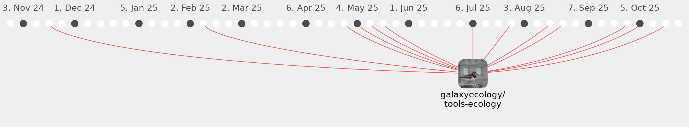

Galaxy Community Activities
MarkusKonk
MarkusKonk
https://github.com/MarkusKonk
Commits all-time:
61
Commits last year:
24

galaxyecology/tools-ecology
(24)
82b4eef
932bbb4
fa7b5c7
1f5e22a
d0fd206
176da50
d6d779f
b3d67b0
dae2727
f3dbb3e
b967cf6
6155153
69bc057
63ab3ae
9b023d0
7a5a28b
d4c953a
cfe048f
18db493
89240f8
358f612
bde064e
5d9fafe
5c12f69